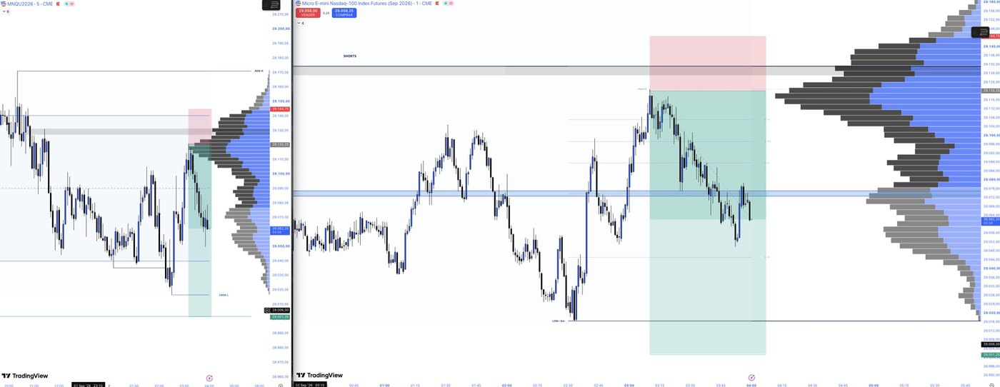

NORTHPOINT TERMINAL · v1 · EN LÍNEA
El software con el que se mide una mesa de futuros. Pegas el resultado y el Terminal calcula lo demás: cuánto le falta a la cuenta para pasar, cuánto le queda antes de romperse, y si hoy te saltaste tu propia regla.
HECHO SOBRE 745 FILLS MEDIDOS Y $11,477 COBRADOS DE CUENTAS DE FONDEO · ABRIL – JUNIO 2026
Está hecho para pantalla de computadora. Ábrelo aquí y paséate por tres meses de historial de muestra.
Abrir la demo →Es el Terminal de verdad, corriendo aquí. Muévete por las pantallas, abre el journal, mira el camino a payout. El historial es de muestra —tres meses, 67 trades— y no toca nada tuyo. Abrirlo en su propia ventana →
CÓMO FUNCIONA
No hay que configurar nada ni instalar nada. Se abre en el navegador y guarda tu historial.
Pegas la captura de TradingView y una IA saca el instrumento, el lado y el resultado. O lo escribes a mano en dos segundos: LONG o SHORT y el P&L.
Win rate, profit factor, racha, días en verde, y el camino a payout de cada cuenta de fondeo. Nada de hojas de cálculo: sale de lo que ya registraste.
Cuánto le queda a cada cuenta antes de tocar su drawdown, y una marca cuando te saltaste tu propia regla. Antes del siguiente trade, no después.
LOS INDICADORES
Escritos en Pine v6 para TradingView. Se cargan con un clic y traen el panel del día encima del chart.

LAS EJECUCIONES
CAPTURAS DE EJECUCIONES REALES · MNQ · RANGO DE APERTURA DE NUEVA YORK. PÍCALAS PARA VERLAS EN GRANDE.
EL PRECIO
No hay plan recortado: todo entra en los tres. Lo único que cambia es cada cuánto pagas.
El precio de hoy, congelado mientras sigas suscrito. No es una cuenta regresiva falsa: son cincuenta lugares y cuando se acaben, se acaban.
ANTES DE DECIDIR
7 días para pedir tu dinero de vuelta, sin explicar por qué, mientras no hayas visto más del 30%.
No. Todo se practica en simulado, y así debe empezarse. La cuota de la fondeadora, cuando la quieras, es aparte y no va a NorthPoint.
Sí: los módulos son grabados y el Terminal no te exige horario. Lo único con hora es la mesa en vivo, en la sesión de Nueva York, y queda grabada.
El Terminal corre en tu navegador y guarda tu historial ahí. Los CSV de la fondeadora se leen en tu máquina: no se suben a ningún lado.
El acceso se manda a mano, al correo con el que compraste. No es automático a propósito: preferimos hablar con quien entra a la mesa.
EMPIEZA HOY
DESDE $992 MXN AL MES · 7 DÍAS DE DEVOLUCIÓN